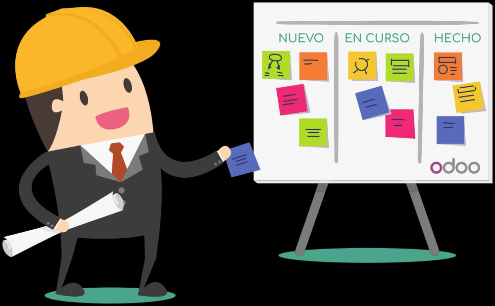

Planificación de proyectos

La gestión de proyectos es la rama de la ingeniería de administración y dirección que se encarga de la planificación y el control de proyectos. Por planificación entenderemos todas aquellas tareas orientadas a planear la ejecución de un proyecto antes de su inicio, mientras que las actividades de control se encargan de la monitorización y seguimiento del progreso del proyecto. Si tomamos la definición dada por la American Management Association, tenemos que "la planificación consiste en determinar qué se debe hacer cómo debe hacerse, quién es el responsable de que se haga y por qué”.
Por otra parte, según el Project Management Institute, nos define la gestión de proyectos (o project management) como la aplicación del conocimiento, habilidades, herramientas y técnicas a las actividades de un proyecto, a fin de cumplir los requerimientos de este. La gestión de proyectos se consigue mediante el desarrollo de procesos tales como: iniciación, planificación, ejecución, control y finalización. El equipo de proyectos dirige el trabajo desarrollado en los proyectos, y estos trabajos normalmente abarcan:
* Cobertura de las demandas: Objetivo, Tiempo, Coste, Riesgo y Calidad
* Mantenimiento de las necesidades y expectativas
* Identificación de los requerimientos
El objetivo de la planificación de proyectos es obtener una distribución de las actividades en el tiempo y una utilización de los recursos que minimice el coste del proyecto cumpliendo con las condiciones exigidos de: plazo de ejecución, tecnología a utilizar, recursos disponibles, nivel máximo de ocupación de dichos recursos.
Por tanto, la planificación de proyectos es una programación de actividades y una gestión de recursos para obtener un objetivo de coste cumpliendo con los condicionantes exigidos por el cliente. La planificación involucra la especificación de objetivos y metas para un proyecto y las estrategias, políticas, planes y procedimientos para alcanzarlos. La planificación enfoca su atención en las metas del proyecto, riesgos potenciales y problemas que puedan interferir con el cumplimiento de esas metas.